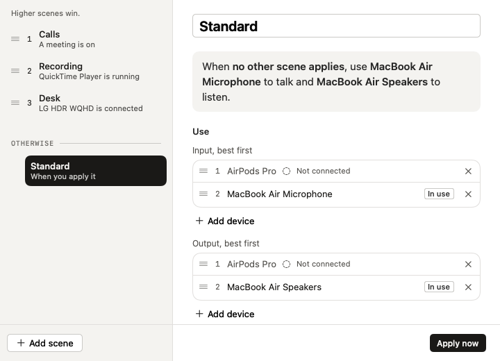

ToneCue vive en la barra de menús y elige tu micrófono y tus altavoces según la situación: una base de conexión, una reunión del calendario, una app abierta. Te dice por qué cambió, y puedes deshacerlo.
Gratis durante 14 días y después 9,99 € una sola vez. Sin cuenta. macOS 13 o posterior.
Una demo corta, desde cambiar a mano hasta escenas que cambian por ti.
Eso funciona hasta que tu día tiene más de una configuración.
Una lista de prioridades fija el orden. No sabe lo que estás haciendo. ToneCue elige los dispositivos para la situación en la que estás.
Ejemplo del problema del auricular: hilo de la comunidad de Apple, diciembre de 2024.
Una escena es un nombre, unos cuantos activadores y dos listas ordenadas de dispositivos, una para la entrada y otra para la salida.
Ordena tus escenas. La primera con un activador activo decide los dispositivos. Una escena predeterminada cubre todo lo demás, así que una lista sencilla de «gana el mejor dispositivo conectado» funciona desde el primer día.
Se conecta un dispositivo, hay una reunión del calendario en curso (si quieres, solo con enlace de reunión y con unos minutos de antelación), una app está abierta o en primer plano, un micrófono está en uso, o el reloj está dentro de una franja horaria en los días de la semana elegidos.
Cuando macOS pasa la entrada a un auricular que acaba de conectarse, ToneCue la devuelve. Funciona por escena y puedes desactivarla.
El popover nombra la escena activa y da el motivo en una frase. Un historial de los últimos cambios ofrece Deshacer en cada uno.
Elige un dispositivo a mano y la automatización se pausa hasta que cambie la escena o pulses Reanudar. ToneCue cambia como máximo una vez por segundo, así que nunca se te cruza en mitad de una llamada.
Un atajo global silencia el micrófono y sigue al dispositivo de entrada. Enlaces como tonecue://scene/Meeting funcionan desde Atajos y scripts. No hay ningún enlace que reactive el sonido, es a propósito.
Elige un momento de tu día. Es una ilustración del popover, no una grabación.
Haz clic en el elemento de ToneCue junto al reloj. El popover muestra la escena activa, el motivo y los dispositivos en uso. Un clic cambia de escena o de dispositivo.
Cada tarjeta de escena dice qué la activa. Cuando empieza una reunión del calendario, la escena Llamadas toma el control y usa tu auricular. Cuando termina, la escena Escritorio vuelve al monitor y al micrófono de estudio.
Cada escena guarda dos listas ordenadas. ToneCue usa el primer dispositivo conectado de cada lista, de modo que un auricular ausente pasa a la siguiente opción en lugar de al silencio.

Te damos la bienvenida
El primer arranque crea una escena a partir de los dispositivos de tu Mac. El acceso al calendario y los atajos son opcionales.
La mayoría de herramientas ordenan tus dispositivos por prioridad o mezclan su sonido. ToneCue decide según la situación y dice por qué.
| Feature | ToneCue | Listas de prioridad gratuitasAudio Priority Bar, SoundAnchor | Recadio | SoundSource |
|---|---|---|---|---|
| Cambia de dispositivo automáticamente | Yes | Por prioridad | Nivel de pago | Not listed |
| Reacciona a una reunión del calendario, una app, un micrófono en uso o la hora del día | Yes | Not listed | Not listed | Not listed |
| Da un motivo por cada cambio | Una frase | Un aviso, como mucho | Not listed | Not listed |
| Deshacer cada cambio | Yes | Not listed | Not listed | Not listed |
| Evita que un auricular se quede con el micrófono | Por escena | Por prioridad | Yes | Not listed |
| Volumen por app, efectos y frecuencia de muestreo | Not listed | Not listed | Not listed | Yes |
| Precio | 9,99 € una sola vez | Gratis | Unos 10 $ una sola vez | Licencia única |
| macOS mínimo | 13 | 14 (Audio Priority Bar) | Not listed | 15 |
Un guion significa que la función no figura en la página del producto. Basado en la página de cada producto en octubre de 2026, no en nuestras pruebas; las funciones y los precios cambian. Fuentes: Audio Priority Bar, Recadio, SoundSource, SoundAnchor.
ToneCue cambia qué dispositivos usa macOS. No graba ni procesa tu sonido.
Instálalo y úsalo. La prueba de 14 días corre en tu Mac.
El control del audio no necesita ninguno. El acceso al calendario solo se pide cuando usas un activador de reunión.
Una comprobación de licencia y una comprobación de actualizaciones, y un informe de diagnóstico solo si lo envías. Sin analítica, sin rastreo.
Pruébalo dos semanas. Paga una vez si se gana su sitio en tu barra de menús.
Sin suscripción. Una licencia cubre tres de tus Macs. Oferta de lanzamiento: 50 % de descuento para los primeros 100 compradores de las tres apps.
Comprar una licenciaCreada y mantenida en Austria. ¿Dudas antes de comprar? Escribe a hello@didact.digital.
Las que realmente surgen.